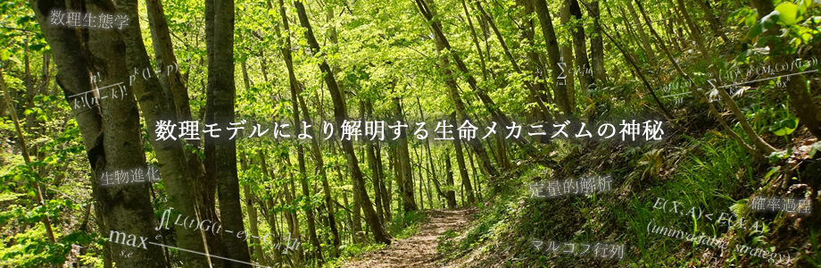

- 2021/07/20学会 New! デモグラファー理論ワークショップの連絡事項（延期や詳細）を追加しました。
- 2021/06/16学会 New! 第四回デモグラファー理論ワークショップの新コース受付を開始しました。
- 2021/3/27学会第四回デモグラファー理論ワークショップの案内を最近更新しました
- 2020/11/29学会第四回デモグラファー理論ワークショップの詳細をアップしました。
- 2020/10/29学会第三回デモグラファー会議オンライン開催の参加登録が始まりました。
- 2019/11/02学会第二回デモグラファー会議のお知らせにガイダンスファイルが追加されました。
- 2019/09/23学会第二回デモグラファー会議の宣伝用ポスターができました。お近くの掲示板でご利用ください。
- 2019/09/05学会第二回デモグラファー会議のお知らせができました（随時変更されます）
- 2019/05/27学会「デモグラフィー理論」ワークショップの懇親会の日程決定・コース５の講師の変更・アナウンスファイルの完成をおしらせします。
- 2018/08/10その他年推移行列のダウンロードサイトをリニューアルしました。
- 2019/04/19学会「デモグラフィー理論」ワークショップの宣伝用ポスターができました
- 2018/09/11学会第一回日本発デモグラファー会議の宣伝用ポスターができました